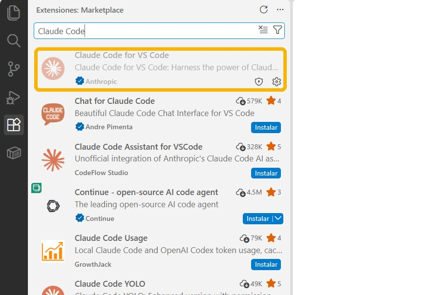
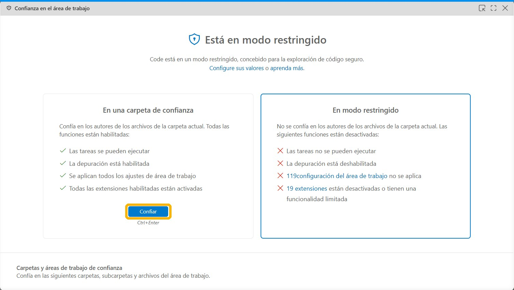
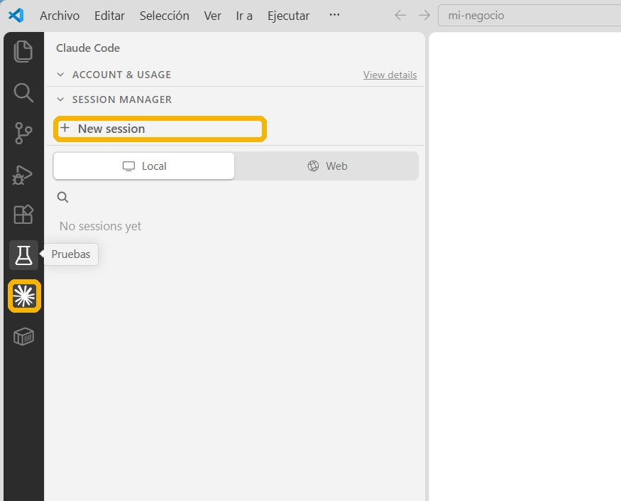
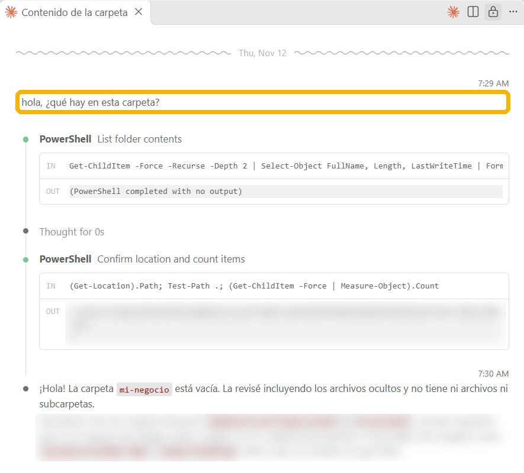

Crea en tu escritorio una carpeta, por ejemplo mi-negocio.
En VS Code ve a Archivo › Abrir carpeta y escógela.
Toca el ícono de Extensiones (los cuadritos de la izquierda) y busca Claude Code.
Instala la de Anthropic, la que tiene el chulo azul.

Ojo: salen muchas parecidas que no son oficiales.
PASO 6
Dile que confías en la carpeta
Si te sale modo restringido, no te asustes.
Toca Confiar.

Sin ese paso, Claude no puede trabajar en tu carpeta.
PASO 7
Abre Claude
Toca el ícono de Claude en la barra de la izquierda.
Toca New session.
La primera vez, inicia sesión con tu cuenta.

PASO 8
Escríbele tu primer mensaje
hola, ¿qué hay en esta carpeta?

Él revisa la carpeta por su cuenta y te responde. Si ves esto, ya quedó instalado.
Kit Claude Code · 2
Háblale como a un empleado nuevo
Es muy capaz, pero no conoce tu negocio, así que todo lo que no le digas lo va a adivinar.
✕ ASÍ NO
hazme el informe de ventas
No sabe dónde están los datos, cómo lo quieres ni para quién es, así que va a inventar.
✓ ASÍ SÍ
en la carpeta ventas está el informe de octubre. hazme el de noviembre igual, con los datos del Excel que está al lado. es para mi socio, así que corto y con gráficas. antes de empezar, pregúntame lo que no entiendas
Lo que debe llevar tu pedido
1
Dónde están las cosas.«en la carpeta ventas está el de octubre»
2
Qué es tu negocio.A quién le vendes y qué vendes.
3
Qué resultado quieres.Deja que él ponga el cómo.
4
Un ejemplo de cómo lo quieres.Un trabajo viejo vale más que diez párrafos.
5
Que te pregunte antes de empezar.«antes de empezar, pregúntame lo que no entiendas»
🔐 Te va a pedir permisoAntes de crear o cambiar un archivo, o de abrir un programa, te pregunta. Lee qué va a hacer y dale Sí.
🗣️ Corrígelo sin miedoSi algo no te gusta, díselo como se lo dirías a una persona, y no hace falta empezar de cero.
Kit Claude Code · 3
Los trucos que uso todos los días
📁 Una carpeta por proyectoClaude trabaja dentro de la carpeta que abres, así que pon ahí los archivos de ese trabajo y solo esos.
🗺️ Pídele el plan antesPara un trabajo grande, escríbele primero:
antes de hacer nada, dime tu plan
📸 Pásale pantallazosSi no sabes qué botón tocar, toma una foto de la pantalla, pégala en el chat y pregúntale.
🔍 Exígele pruebaCuando te diga «listo», no le creas todavía y escríbele:
muéstrame cómo comprobaste que funciona
🧠 Dale memoriaClaude Code lee un archivo llamado CLAUDE.md cada vez que abres la carpeta, así que lo que escribas ahí no tienes que repetirlo nunca más.
CÓPIALO Y LLÉNALO
crea un archivo CLAUDE.md con lo que debes saber de mi negocio: [qué vendo, a quién, cómo hablo y qué no debes hacer nunca]
✍️ Tu primer pedidoEscoge una tarea que hagas a mano cada semana y pégale esto:
CÓPIALO Y LLÉNALO
esto lo hago a mano cada semana: [explícalo como se lo explicarías a un empleado nuevo]. ¿cómo lo automatizamos? pregúntame lo que necesites
Así lo uso yo
4 trabajos reales y lo que le escribí
Administración
El informe del mes que se hizo solo
LO QUE YO LE ESCRIBÍnecesito crear un informe de gestión del mes de agosto [...] en Descargas encuentras el de julio, quiero que lo leas y me digas qué información necesaria necesitas [...] pregunta lo que necesites
Leyó 40 correos y 10 reuniones de mi Outlook, y en 27 minutos dejó el informe listo.
CÓPIALO ASÍ
necesito crear [el informe] de [mes] de [proyecto]. en [carpeta] está el del mes pasado, léelo y dime qué información necesitas para hacer el nuevo. pregunta lo que necesites
Contabilidad
Un programa de botones para el contador
LO QUE YO LE ESCRIBÍun humano entra manualmente, entra a cada botón, ve la información que tiene y le da guardar en PDF [...] quiero automatizar ese proceso.
Y CUANDO ME DIJO «LISTO»cómo garantizo que realmente sí es confiable [...] NO MÁS ERRORES DE IA
El contador lo abre con doble clic: tiene 10 botones y 3 revisiones que se vigilan entre ellas.
CÓPIALO ASÍ
en [carpeta] está [el archivo]. una persona hoy hace esto a mano: [paso 1, paso 2, paso 3]. quiero automatizar ese proceso. cuando termines muéstrame cómo comprobaste que funciona
Ventas
¿Por qué no compran los que escriben?
LO QUE YO LE ESCRIBÍhacer la evaluación de los mensajes para ver qué está pasando, porque no cierran tanto
Y CUANDO NO LE CREÍnecesito que leas texto por texto todas las conversaciones
Leyó 4.304 conversaciones. Con audio del equipo agenda el 74 % de la gente, y con solo texto, el 12 %.
CÓPIALO ASÍ
en [carpeta] están las conversaciones con mis clientes. léelas todas, una por una, y dime por qué no compran, en qué parte se van y qué les debo decir distinto
Redes
Las redes que se publican solas
LO QUE YO LE ESCRIBÍla idea es programar, usar unos en reels de prueba, otros en feed, otros en TikTok, en la cuenta de PatoEditor, bueno, organizar todo
Dejó 15 publicaciones de Instagram en 2 cuentas saliendo solas, cada una a la hora que escogió después de medir 95 reels.
CÓPIALO ASÍ
en [carpeta] están mis videos. organiza cuál va en cada red, qué día y a qué hora, y déjalos programados. muéstrame el calendario antes de programar